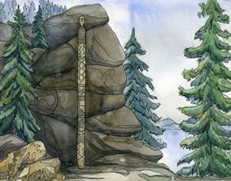

Шигирский идол
Деревянное изваяние было найдено 5 февраля 1890 года на одном из уральских приисков и представляет собой обработанный ствол лиственницы с восемью антропоморфными персонажами, явно демонстрирующими, что те, кто их создал, обладали, как минимум, фантазией. Что все эти персонажи символизируют, сейчас, ясное дело, сложно сказать. Можно лишь предположить, что они могут олицетворять природные стихии, мужское и женское начало и все такое прочее. В любом случае, на это чудо человеческого гения, которое, к тому же, гораздо старше египетских пирамид, просто необходимо посмотреть своими глазами и почувствовать дыхание древности. С 2016 года в Музее истории и археологии Урала решено ежегодно 5 февраля праздновать День Шигирского идола с бесплатным входом и театрализованными экскурсиями. 